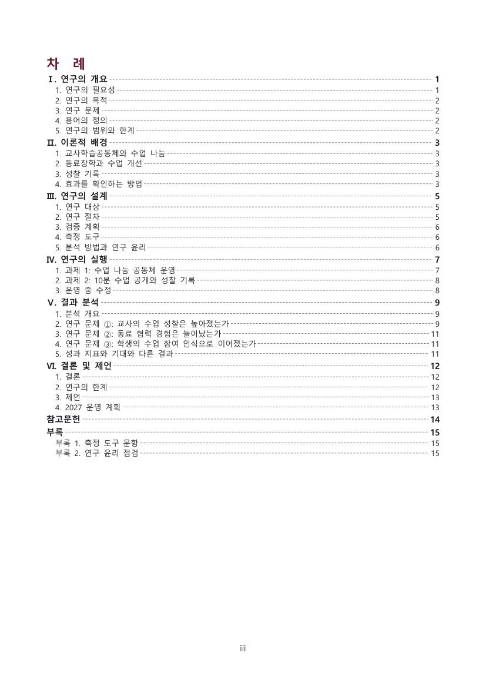
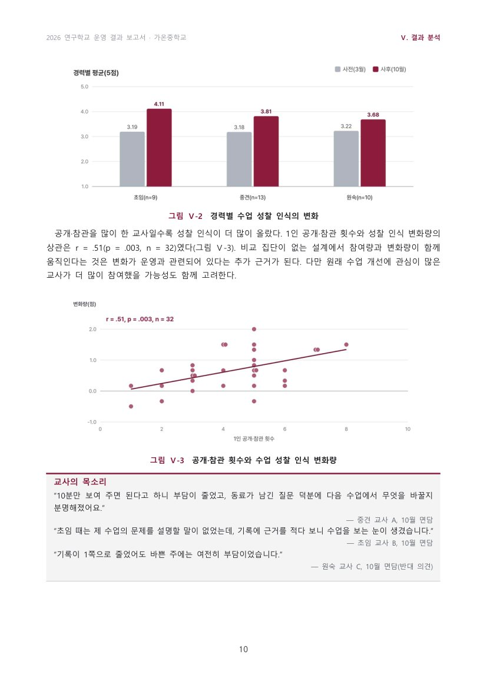

STEP 1
예시를 복사해 내용만 바꿉니다
report init 이 바로 빌드되는 원고·자료(CSV)·사진을 만들어 줍니다. 구성과 표시는 그대로 두고 학교·주제·자료만 바꾸면 됩니다.
@ch Ⅴ | 결과 분석 | 세 연구 문제에 대한 답 | photos/ch5.jpg @sec 2 | 연구 문제 ①: 교사의 수업 성찰은 높아졌는가
STEP 2
숫자는 AI 가 아니라 도구가 계산합니다
원고에 계산 명령을 쓰면 조판할 때마다 자료 파일에서 다시 계산해 본문에 넣습니다. 손으로 옮겨 적다 생기는 불일치가 사라집니다.
@stats paired data.csv --pre 사전 --post 사후 --prefix ref 평균은 {{ref.m0}}점에서 {{ref.m1}}점으로 올랐다 (t({{ref.df}}) = {{ref.t}}, p {{ref.p}}, d = {{ref.d}}).
STEP 3
차례 쪽수는 한글이 놓은 자리로
한글로 PDF 를 만들어 제목이 실제로 놓인 쪽을 읽고, 쪽이 바뀌지 않을 때까지 다시 조판합니다. 쪽을 넘는 표는 행 단위로 나누고 머리행을 반복합니다.

STEP 4
도표는 자료만 쓰면 같은 디자인으로
막대·묶음·효과 크기·산점도·누적·흐름·절차·순환 등 12종. 인쇄해도 읽히는 글자 크기와 300dpi 로 넣습니다.
@chart dose | 공개·참관 횟수와 성찰 변화 | type=scatter | data=data.csv | x=공개참관횟수 | y=성찰변화 @end

STEP 5
심사자가 먼저 짚을 실수를 미리
참고문헌에 없는 인용, 틀린 요일, 풀리지 않은 참조, 근거보다 큰 말, 검정 없는 ‘유의’, 쪽수 초과를 찾아 줍니다.
[오류] 참고문헌에 없는 인용: "홍길동, 2020"
[오류] 요일이 맞지 않음: 2026. 11. 5.(수) → 목요일
[주의] 근거보다 큰 말 "입증"
결과: 오류 0, 주의 0 ✓
[오류] 요일이 맞지 않음: 2026. 11. 5.(수) → 목요일
[주의] 근거보다 큰 말 "입증"
결과: 오류 0, 주의 0 ✓